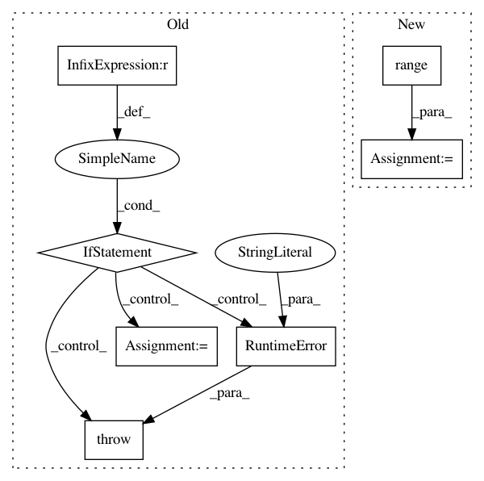

7e9154fdc79281420d027c7892c395946622ee40,gpytorch/lazy/toeplitz_lazy_variable.py,ToeplitzLazyVariable,__getitem__,#ToeplitzLazyVariable#Any#,237
Before Change
return ToeplitzLazyVariable(self.c, J_left_new, C_left_new,
J_right_new, C_right_new, diag_new)
else:
if i[0] != i[1]:
raise RuntimeError("Slicing an uninterpolated Toeplitz matrix to be non-square is probably \
unintended. If that was the intent, use evaluate() and slice the full matrix.")
c_new = reverse(reverse(self.c)[i[0]])
if self.added_diag is not None:
diag_new = reverse(reverse(self.added_diag)[i[0]])
else:
diag_new = None
After Change
C_left_new = self.c.data.new().resize_as_(J_left_new).fill_(1)
J_left_new = J_left_new.long()
// J[i[1], :] C[i[1], :]
J_right_new = self.c.data.new(range(len(self.c))[i[1]]).unsqueeze(1)
C_right_new = self.c.data.new().resize_as_(J_right_new).fill_(1)
J_right_new = J_right_new.long()
else:
// J[i[0], :], C[i[0], :]
J_left_new = self.J_left[i[0]]
In pattern: SUPERPATTERN
Frequency: 3
Non-data size: 7
Instances
Project Name: cornellius-gp/gpytorch
Commit Name: 7e9154fdc79281420d027c7892c395946622ee40
Time: 2017-08-25
Author: gpleiss@gmail.com
File Name: gpytorch/lazy/toeplitz_lazy_variable.py
Class Name: ToeplitzLazyVariable
Method Name: __getitem__
Project Name: cornellius-gp/gpytorch
Commit Name: 38a40828ec688be626e51ebcb1a60a54479fd997
Time: 2017-08-29
Author: ruihan.wu14@gmail.com
File Name: gpytorch/lazy/toeplitz_lazy_variable.py
Class Name: ToeplitzLazyVariable
Method Name: diag
Project Name: pyprob/pyprob
Commit Name: 1c758ba9d6c14d9b9d3599e44c3508e2692d8d35
Time: 2018-09-28
Author: atilimgunes.baydin@gmail.com
File Name: pyprob/distributions/empirical.py
Class Name: Empirical
Method Name: expectation